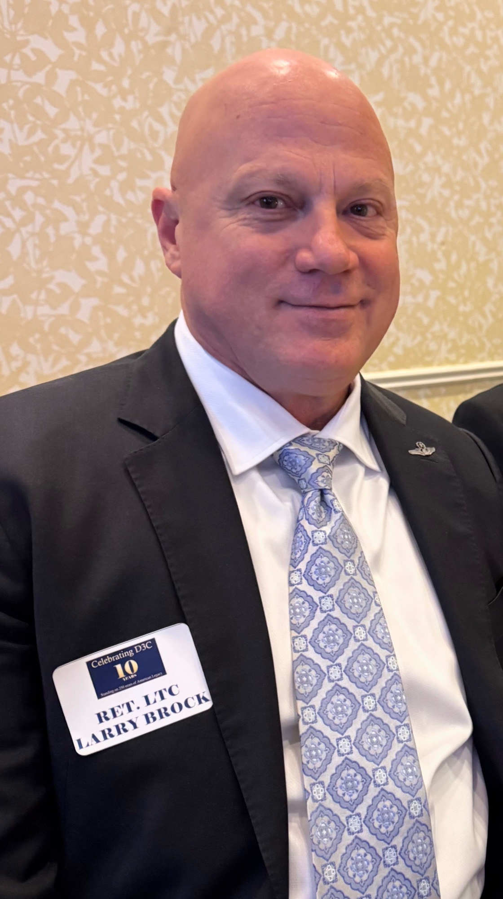

House District 106
The Agenda
Published priorities for Texas — clear, constitutional, and House-first.
-
Property Tax Relief
Protect homeowners and small businesses from Austin’s tax squeeze. Families should keep more of what they earn.
-
Austin’s Belt
Push back on overreach. Keep local control where Texans live, work, and raise their kids.
-
Secure Elections
One citizen, one vote — election integrity Texans can trust from registration to certification.
-
Power & Water
Reliable grids and water — infrastructure that keeps North Texas running through heat, growth, and crisis.
-
Roads & Mobility
Fix congestion and invest in the roads, corridors, and mobility HD-106 depends on every day.
-
Judicial Accountability
Courts that answer to the Constitution — and to the people of Texas — not political fashion.

About Larry
Tested Leadership
Retired Air Force Lieutenant Colonel. Fifth-generation Texan. Constitutional conservative — House first, Texas first.
Larry Brock brings disciplined service, clear priorities, and a refusal to rubber-stamp Austin’s belt. He stands with families, small businesses, and the rule of law — the same values that built HD-106.
- U.S. Air Force — Lieutenant Colonel (Ret.)
- Fifth-generation Texan · HD-106
- Constitutional conservative · America First lane
Get involved
Join the Fight
This seat won’t defend itself. Chip in, share the message, and help put tested leadership in the Texas House.